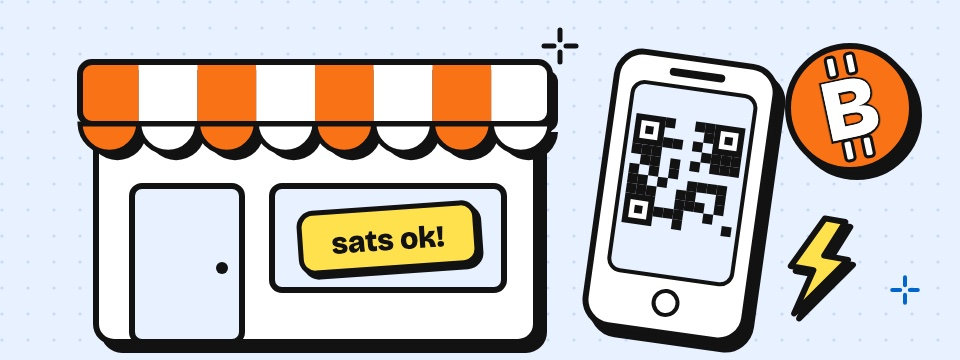
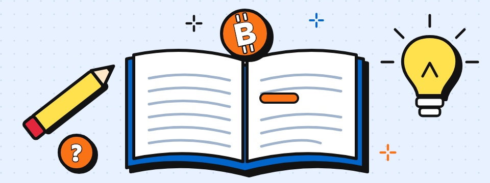
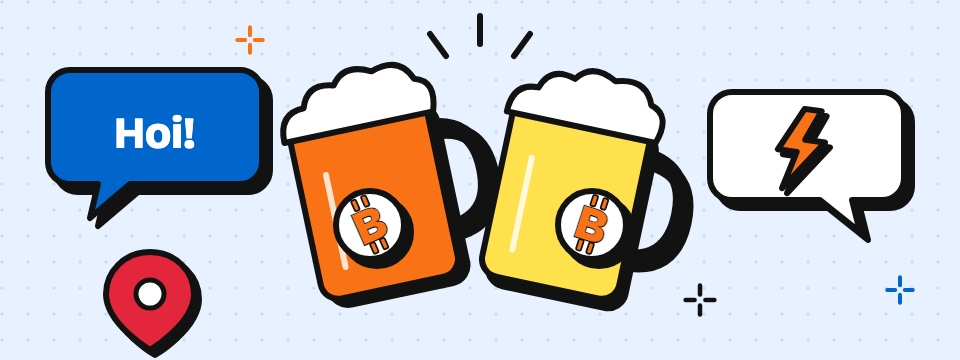

Gemeenschap
Kletsen, vragen stellen en samen dingen opzetten met Friese Bitcoiners. Ook als je net begint.
Leer hoe Bitcoin werkt, betaal bij Friese ondernemers en ontmoet Bitcoiners uit de buurt. Meedoen is gratis.
Word deel van de Bitcoin-beweging in Friesland. Gezellig, nuchter en zonder verkooppraatjes.
Kletsen, vragen stellen en samen dingen opzetten met Friese Bitcoiners. Ook als je net begint.
Regelmatig ergens in Friesland: een drankje, een goed gesprek en vaak iemand die je even helpt met je wallet.
Friese ondernemers waar je met Bitcoin of Lightning betaalt. Van bakker tot pedicure.
Geen jargon, geen hype. Gewoon uitleg.
Digitaal geld dat niemand kan bijdrukken of blokkeren. Je stuurt het direct naar iedereen, zonder bank ertussen.
Een vaste hoeveelheid, zelf beheren en wereldwijd te gebruiken. Daarom vinden steeds meer Friezen het interessant.
Hoeveel euro is 21.000 sats? Reken het om met de live koers, ook in dollar.
Geselecteerde Bitcoin-bronnen en nuttige links.

Alles voor ondernemers die Bitcoin willen accepteren.

De Nederlandstalige Bitcoin-kennisbank.

Overzicht van alle Bitcoin-meetups in Friesland.
The Times 03/Jan/2009 Chancellor on brink of second bailout for banks
Verbind met onze gemeenschap op Telegram of Signal en blijf op de hoogte van het laatste nieuws en evenementen.
Opmerking: Deze informatie is alleen voor educatieve doeleinden en vormt geen financieel advies.